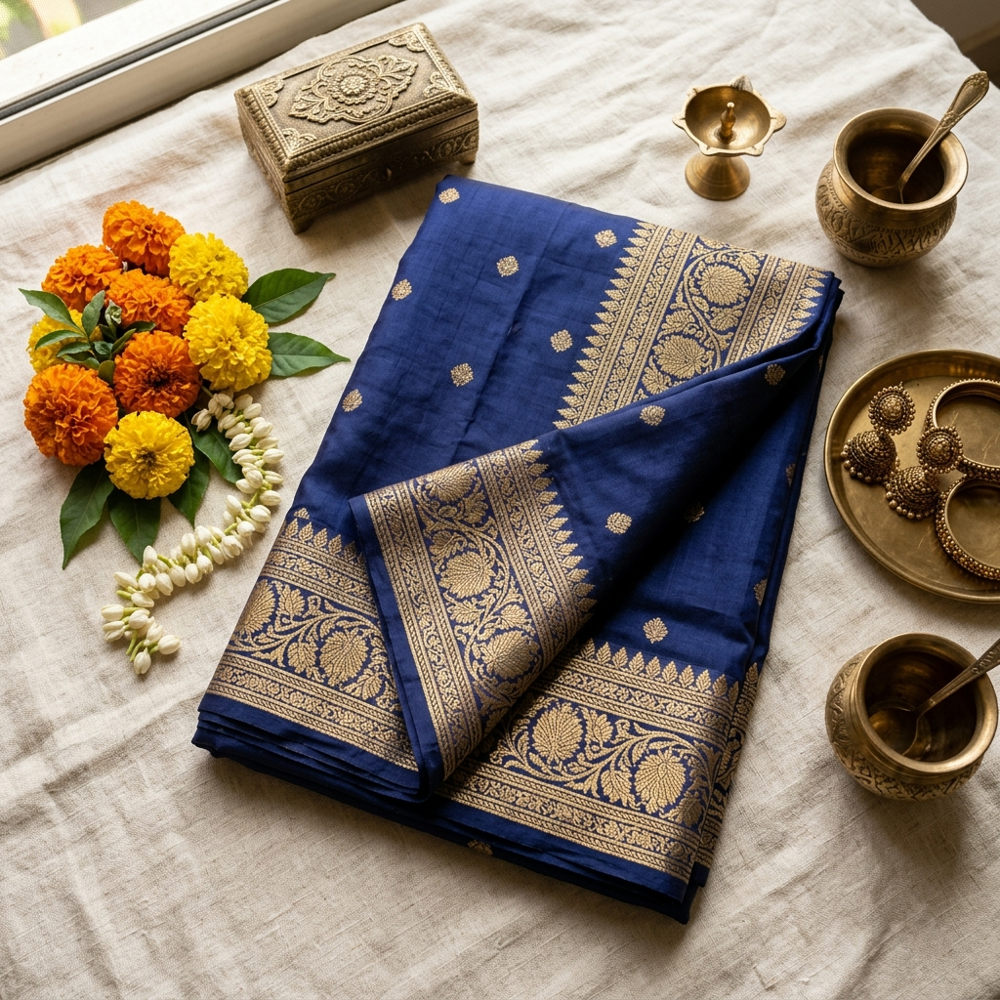

Lakshmi Devi
"Namaskaram. I have been weaving Ikat patterns since I was a young girl, learning the craft from my mother. In our village, weaving is not just a job; it is our culture and our heritage. Through ThreadCraft, I am excited to share my traditional designs directly with you. I specialize in pure cotton and silk Ikat sarees, and I am always happy to take custom color requests to weave something truly special for your family."
Lakshmi's Collection
Ready to ship directly from the loom
